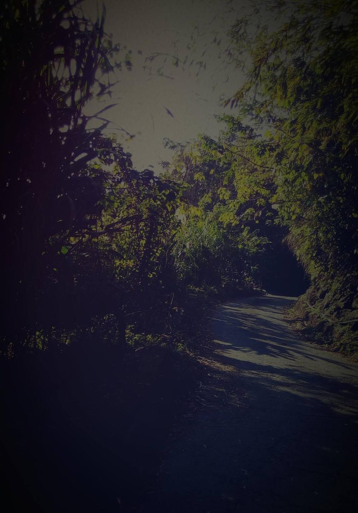

竹竿鬼
2017-12-19

臺灣傳說，竹林有竹竿鬼，身軀細長，喜愛捉弄路過之人。
〈竹竿鬼〉
「咱山哩吼，有竹竿鬼欸給人創治…」
每晚愛睏之前，我都會纏阮老北講古給我聽。若是聽到鬼仔古，我就愛抱著一件舊舊破破的小被子，藏到阿爸的腋下，只露出一個耳朵。
鐵厝的窗上，裝著一台要壞不壞的抽風扇，卡達卡達，阿爸總要跟它合奏，發出鬼祟的聲響嚇人。
「撲通、撲通。」不管聽第幾次，心臟仍然乒乓彩，出生沒帶膽的我，躲到沒地方去。不過，還是跟著阿爸走進去伊細漢欸時。
「卡早沒瓦斯、沒電、沒自來水，小學放學回來，恁阿公、阿嬤擱在工作。阿姐煮飯，我就要快點上山去撿柴回來燒水。」
「日頭下山，竹林吹來的風涼涼涼，竹身嘰拐、嘰拐，竹葉沙沙沙。有當時，一陣怪風來，若有人底在竹林裡面嚎。」
「彼一次，我愛?迌，回家太陽已經下山，天只剩微微亮，恁阿嬤回來看到沒柴火可以燒水，她抄起一枝綁掃把的竹枝就往我腿上鞭。」
「我拔腿就往上衝，顧不得小腿上辣痛。趕快撿、趕快撿。天暗得剩沒幾絲光......」
「嗚～」聲來，遠遠的路中央站一支兩樓高的竹竿，我不敢放掉手裡的柴，轉頭就跑。
「啊娘威」，路上什麼時候又躺一支竹仔。我哮也不敢哮，連滾帶爬衝回家。
「那一天被打得歪七扭八。」
濛濛地我看到那支竹竿鬼，眼睛瞇瞇，快要睜不開了，「仔載睏飽我去砍那支竹竿……」
邀您黃昏一同聽故事。